Hejduk & Loos - Hybrid Design
A synthesis of Hejduk’s structural grid poetics and Loos’s functional clarity.
This study analyzes two influential architects-John Hejduk and Adolf Loos-to create a cohesive hybrid language. Hejduk’s reliance on the grid as a generative framework structures space and pattern, while Loos’s pragmatic approach prioritizes utility and the rejection of ornament.
The project stages a dialogue between abstraction and function: a rigorous grid sets proportion and rhythm, and programmatic needs tune the plan, thresholds, and material expression toward clear, efficient occupation.
Concept Studies
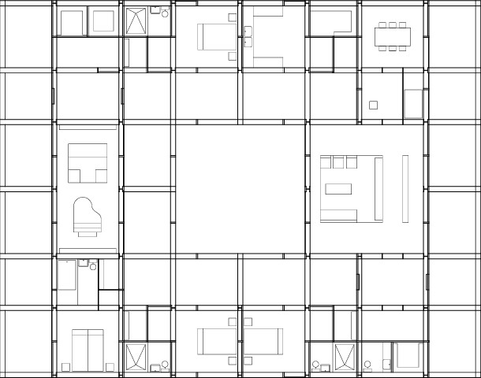
Axonometric grid iterations; material cues stripped to emphasize function and sequence.
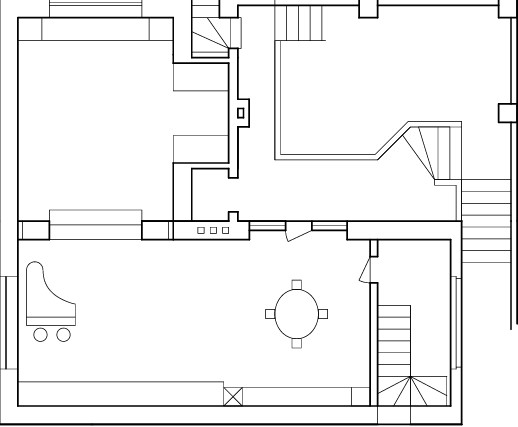
Diagrams test grid density against circulation and room hierarchy. Selective openings maintain clarity while enabling varied spatial readings.
Plans & Sections
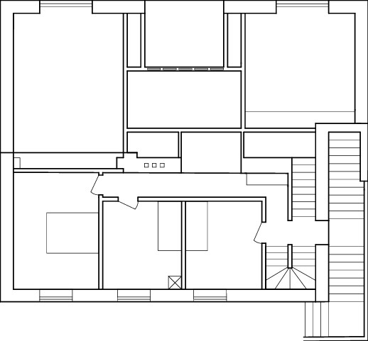

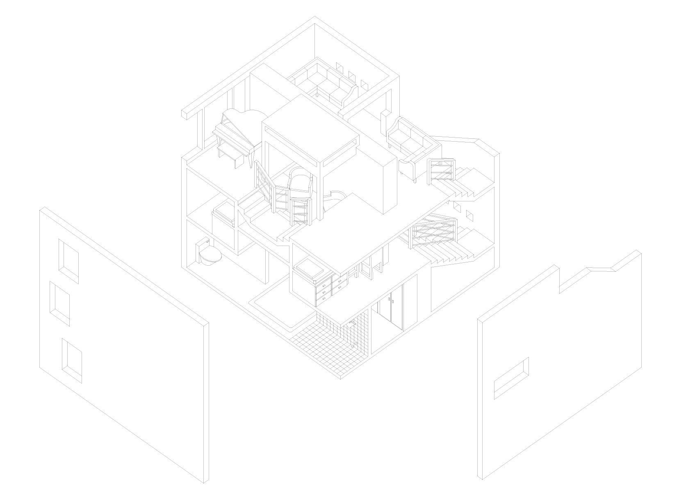
Strategies
Grid as ordering device; program as editor. Material restraint underscores function, while sectional moves introduce moments of spatial intensity without decorative excess.
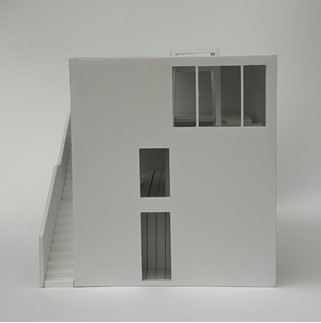
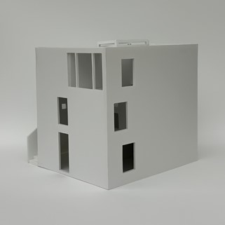
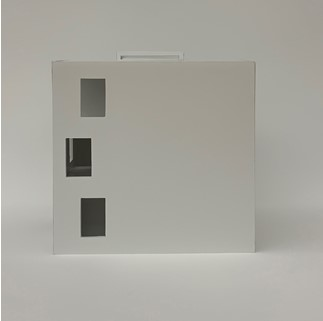
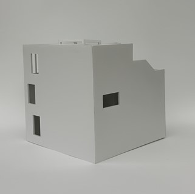
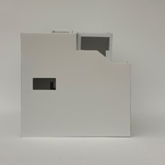
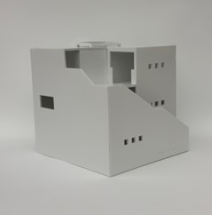
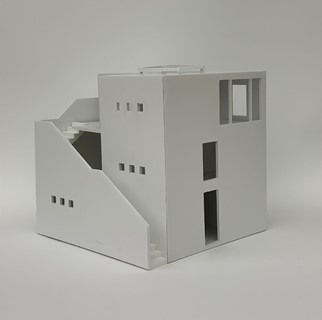
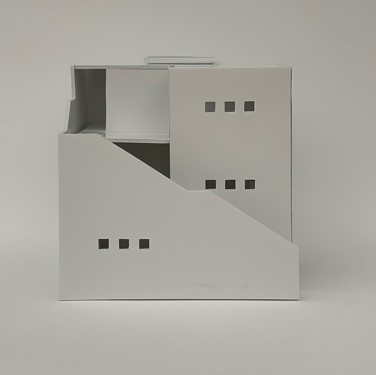
“Between the discipline of the grid and the economy of means, space becomes precise and purposeful.”